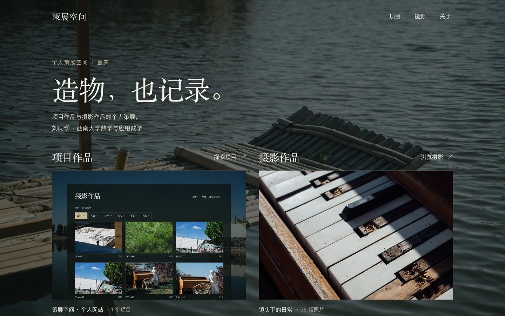
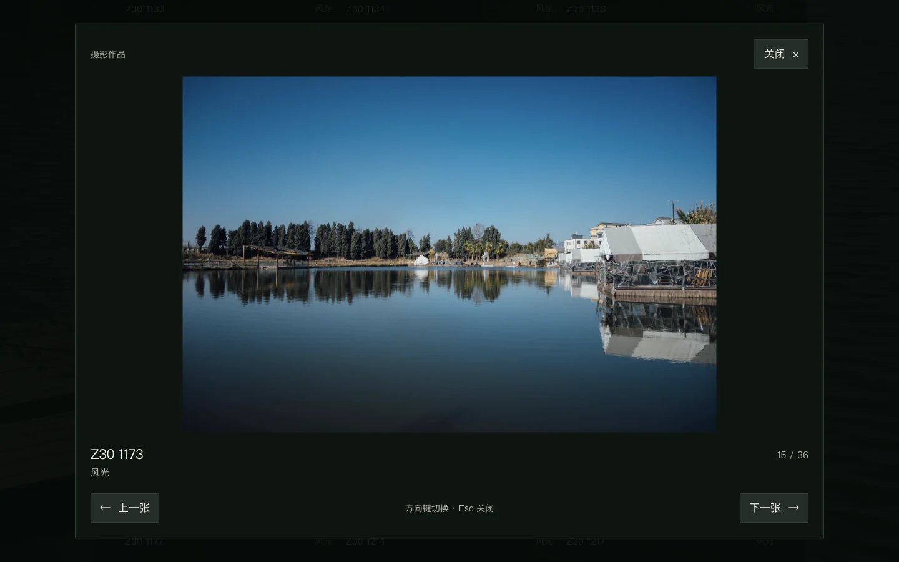
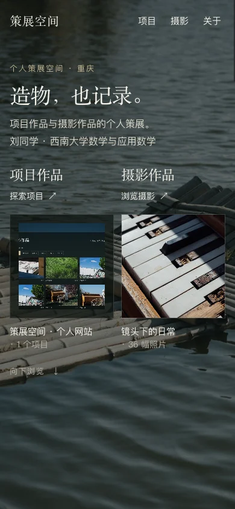

策展空间
项目与摄影的个人展厅。
一个正在持续建设的个人网站。这里展示真实推进的项目，也收藏镜头里的日常。网站已上线，正在持续完善内容、界面与浏览体验。
- 项目状态
- 持续迭代
- 展示内容
- 项目作品与摄影作品
- 实现方式
- HTML / CSS / JavaScript

把作品放进同一间展厅
做这个网站，是希望有一个能持续更新的个人展示空间。项目记录构建与实践，摄影记录观察与感受，两类作品共同组成这个网站。
设计从“策展空间”展开。首页用同等级的标题、预览和入口介绍两类作品，随后分别进入项目介绍与摄影浏览。
现在可以体验到
- 全屏照片壁纸与暗色遮罩，每次加载切换壁纸。
- 项目入口、用途介绍与独立的项目详情。
- 摄影分类、数量提示、空状态和大图浏览。
- 手机布局、键盘操作与减少动态效果适配。
从浏览到细看
作品有清楚的入口，也有可以停下来阅读与观看的空间。

在手机上也能完整浏览
双入口在窄屏上保持可发现。分类按钮自动换行，照片可以直接点开，大图按原始比例缩放，关闭和前后张控件保持可操作。
打开大图后，焦点进入查看器。关闭时回到原来的照片与滚动位置，继续浏览时能够接上之前的位置。
试试摄影浏览
用静态文件持续构建
网站沿用原生 HTML、CSS 和 JavaScript。页面可以由普通静态 HTTP 服务提供，作品数据与展示逻辑分别维护。
这种结构适合当前阶段逐步补充内容，也方便把背景、作品列表和浏览交互分别调整。
- 页面与样式
- HTML 组织内容，CSS 定义壁纸、遮罩、布局与响应式样式。
- 作品数据
- 项目与照片读取本地 JSON，摄影复用现有缩略图和大图。
- 浏览交互
- 原生 JavaScript 处理分类与壁纸切换，dialog 承载大图查看器。
这次设计里的几个选择
给两类作品相同的分量
项目和摄影在首屏并列，使用一致的入口层级。项目以用途和实现展开，摄影以图片和浏览体验展开。
让壁纸与阅读各有位置
照片铺满视窗，暗色遮罩稳定文字对比。长内容放在深色承托面上，壁纸继续出现在页面边缘与区块之间。
把交互细节放进实现
分类结果与大图使用同一集合，单张照片集合有明确的按钮状态。键盘焦点、滚动恢复和减少动态效果一起纳入浏览流程。
全屏壁纸的呈现方式参考了 dmego/home.github.io，结合本项目的双展区结构与本地摄影素材实现。